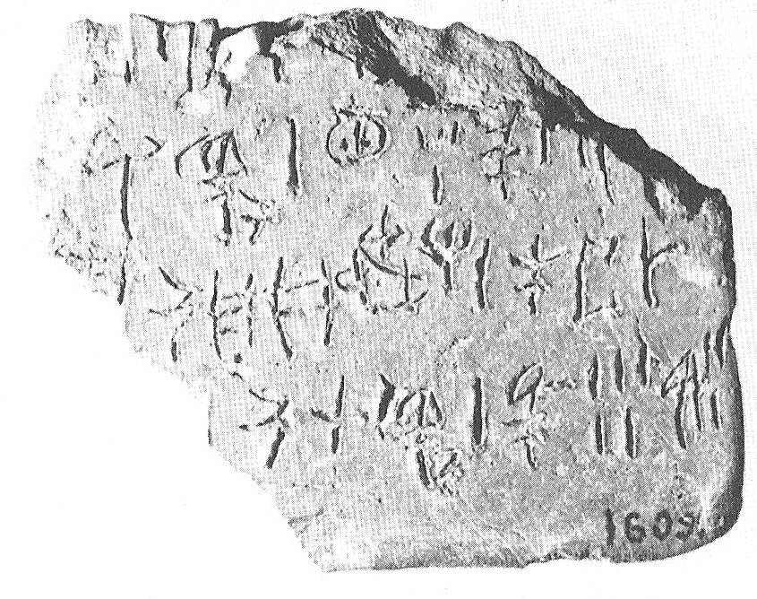
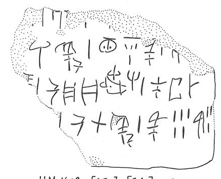

Photograph and drawing available.
| side.line | statement | logogram | number | fraction |
| supra mutila | ||||
| a.1 | ] A [ | |||
| a.2 | ]RU | CAPm+KU {*513} | 1 | |
| a.2 | MA-DI | OVISm | 1 | |
| a.2 | OVISf [ | |||
| a.3 | •]+NE | 1 | ||
| a.3 | KU-PA 3 -NU | SUS+SI+RE | 1 | |
| a.3-4 | PA-TA-DA[ | ] 1 | ||
| a.4 | KU-RO | CAPm+KU {*513} | 1 | |
| a.4 | OVISm | 5 | ||
| a.4 | OVISf | 3 [ | ||
| supra mutila | ||||
| b.1 | ] CAPf | 2 | ||
| b.1 | OVISf | 1 [ | ||
| b.2 | ]- DU -RI | CAPm | 1 | |
| b.2 | TU-[ | |||
| b.3 | ] NE | CAPm | 1 | |
| b.3 | CAPf | 5 | ||
| b.3 | TE-RI | OVISm [ | ||
| b.4 | [ | ] 1 | ||
| b.4 | RI -RU-MA-TI | OVISm | ||
| b.4 | SUS+SI[ | |||
| b.5 | A-MI-DA-O | OVISm | 1 [ |